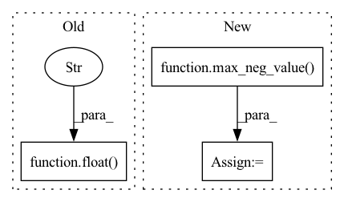

Pattern ID :2719
Before Change
dots = rel_pos(dots)
if exists(input_mask):
dots.masked_fill_(~input_mask, float("-inf" ) )
del input_mask
if self.causal:After Change
dots = einsum("b h i d, b h j d -> b h i j", q, k) * self.scale
mask_value = max_neg_value( dots)
if talking_heads:
dots = einsum("b h i j, h k -> b k i j", dots, self.pre_softmax_proj).contiguous()
In pattern: SUPERPATTERN
Frequency: 6
Non-data size: 3
Instances Fragment ID: 10920374
Project Name: lucidrains/x-transformers
Commit Name: 11d77c7781eba38aa53abbcb5cbb295859954b31
Time: 2020-11-13
Author: lucidrains@gmail.com
File Name: x_transformers/x_transformers.py
M Class Name: Attention
N Class Name: Attention
M Method Name: forward(6)
N Method Name: forward(6)
M Parent Class: nn.Module
N Parent Class: nn.Module
M File Name: x_transformers/x_transformers.py
N File Name: x_transformers/x_transformers.py
M Start Line: 239
M End Line: 252
N Start Line: 233
N End Line: 257
Before Change
if input_mask is not None:
mask = input_mask[:, None, :, None] * input_mask[:, None, None, :]
mask = F.pad(mask, (mem_len + cmem_len, 0), value = False)
dots.masked_fill_(~mask, float("-inf" ) )
mask = torch.ones(t, kv_len, **to(x)).triu_(diagonal = 1 + kv_len).bool()
dots.masked_fill_(mask[None, None, ...], float("-inf"))After Change
q, k, v = map(merge_heads, (q, k, v))
dots = torch.einsum("bhid,bhjd->bhij", q, k) * self.scale
mask_value = max_neg_value( dots)
if pos_emb is not None:
pos_dots = torch.einsum("bhid,hjd->bhij", q, pos_emb) * self.scale
pos_dots = shift(pos_dots) Fragment ID: 10920375
Project Name: lucidrains/compressive-transformer-pytorch
Commit Name: 95edcd4e60ef2e9c9f46588d0bc7b36ff255565a
Time: 2020-07-03
Author: lucidrains@gmail.com
File Name: compressive_transformer_pytorch/compressive_transformer_pytorch.py
M Class Name: SelfAttention
N Class Name: SelfAttention
M Method Name: forward(6)
N Method Name: forward(6)
M Parent Class: nn.Module
N Parent Class: nn.Module
M File Name: compressive_transformer_pytorch/compressive_transformer_pytorch.py
N File Name: compressive_transformer_pytorch/compressive_transformer_pytorch.py
M Start Line: 190
M End Line: 193
N Start Line: 183
N End Line: 197
Before Change
if self.causal:
i, j = torch.triu_indices(t, t, 1)
dot[:, i, j] = float("-inf" )
dot = dot.softmax(dim=-1)
out = torch.einsum("bij,bje->bie", dot, v)
return out, dotAfter Change
// qk attention requires tokens not attend to self
i = torch.arange(t)
dot[:, i, i] = TOKEN_SELF_ATTN_VALUE
masked_value = max_neg_value( dot)
if input_mask is not None:
mask = input_mask[:, :, None] * input_mask[:, None, :]
mask = F.pad(mask, (0, seq_len - mask.shape[-1]), "constant", True) Fragment ID: 10920372
Project Name: lucidrains/reformer-pytorch
Commit Name: 6bcbb058548ac305ec39557073c4d17bb7d16b28
Time: 2020-02-06
Author: lucidrains@gmail.com
File Name: reformer_pytorch/reformer_pytorch.py
M Class Name: FullQKAttention
N Class Name: FullQKAttention
M Method Name: forward(5)
N Method Name: forward(5)
M Parent Class: nn.Module
N Parent Class: nn.Module
M File Name: reformer_pytorch/reformer_pytorch.py
N File Name: reformer_pytorch/reformer_pytorch.py
M Start Line: 365
M End Line: 376
N Start Line: 369
N End Line: 379
Before Change
// Mask out attention to other hash buckets.
if not self._attend_across_buckets:
bucket_mask = bq_buckets[:, :, :, None] != bkv_buckets[:, :, None, :]
dots.masked_fill_(bucket_mask, float("-inf" ) )
del bucket_mask
// Don"t double-count query-key pairs across multiple rounds of hashing.After Change
// Dot-product attention.
dots = torch.einsum("bhie,bhje->bhij", bq, bk) * (dim ** -0.5)
masked_value = max_neg_value( dots)
if input_mask is not None:
input_mask = F.pad(input_mask, (0, seqlen - input_mask.shape[1]), "constant", True)
mq = input_mask.gather(1, st).reshape((batch_size, chunk_size, -1)) Fragment ID: 10920373
Project Name: lucidrains/reformer-pytorch
Commit Name: 6bcbb058548ac305ec39557073c4d17bb7d16b28
Time: 2020-02-06
Author: lucidrains@gmail.com
File Name: reformer_pytorch/reformer_pytorch.py
M Class Name: LSHAttention
N Class Name: LSHAttention
M Method Name: forward(5)
N Method Name: forward(5)
M Parent Class: nn.Module
N Parent Class: nn.Module
M File Name: reformer_pytorch/reformer_pytorch.py
N File Name: reformer_pytorch/reformer_pytorch.py
M Start Line: 253
M End Line: 270
N Start Line: 249
N End Line: 274
Before Change
bq_k = look_around(b_t, **look_around_kwargs)
dots = torch.einsum("bhie,bhje->bhij", bq, bk) * (e ** -0.5)
mask_value = float("-inf" )
if shared_qk:
mask = bq_t[:, :, :, None] == bq_k[:, :, None, :]
dots.masked_fill_(mask, TOKEN_SELF_ATTN_VALUE)After Change
dots = torch.einsum("bhie,bhje->bhij", bq, bk) * (e ** -0.5)
mask_value = max_neg_value( dots)
if shared_qk:
mask = bq_t[:, :, :, None] == bq_k[:, :, None, :]
dots.masked_fill_(mask, TOKEN_SELF_ATTN_VALUE) Fragment ID: 10920371
Project Name: lucidrains/linear-attention-transformer
Commit Name: bfdf2dc29d4a1f145914ff0cdc4472d80009b596
Time: 2020-06-05
Author: lucidrains@gmail.com
File Name: linear_attention_transformer/linear_attention_transformer.py
M Class Name: LocalAttention
N Class Name: LocalAttention
M Method Name: forward(5)
N Method Name: forward(5)
M Parent Class: nn.Module
N Parent Class: nn.Module
M File Name: linear_attention_transformer/linear_attention_transformer.py
N File Name: linear_attention_transformer/linear_attention_transformer.py
M Start Line: 120
M End Line: 150
N Start Line: 104
N End Line: 162
Before Change
if self.causal:
mask = torch.ones(self.window_size, self.window_size, device=device).byte().triu_(1).bool()
dots.masked_fill_(mask, float("-inf" ) )
del mask
mask = torch.eye(self.window_size, device=dots.device).bool()After Change
dots = torch.einsum("bhnid,bhnjd->bhnij", q, k) * (d ** -0.5)
dots = dots + self.rel_pos(q)
mask_value = max_neg_value( dots)
if self.causal:
mask = torch.ones(self.window_size, self.window_size, device=device).byte().triu_(1).bool()
dots.masked_fill_(mask, mask_value) Fragment ID: 10920379
Project Name: lucidrains/routing-transformer
Commit Name: 3906e09feb06e14f7220b3afe4e1e8d4b01e895f
Time: 2020-05-23
Author: lucidrains@gmail.com
File Name: routing_transformer/routing_transformer.py
M Class Name: KmeansAttention
N Class Name: KmeansAttention
M Method Name: forward(3)
N Method Name: forward(3)
M Parent Class: nn.Module
N Parent Class: nn.Module
M File Name: routing_transformer/routing_transformer.py
N File Name: routing_transformer/routing_transformer.py
M Start Line: 276
M End Line: 276
N Start Line: 272
N End Line: 281